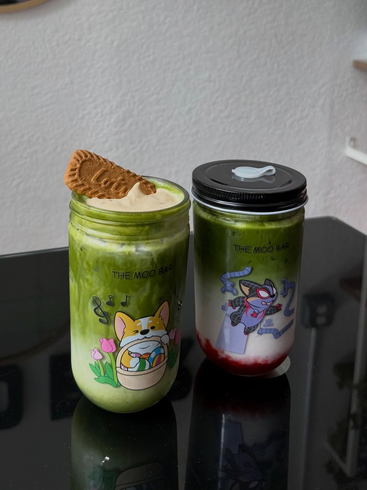
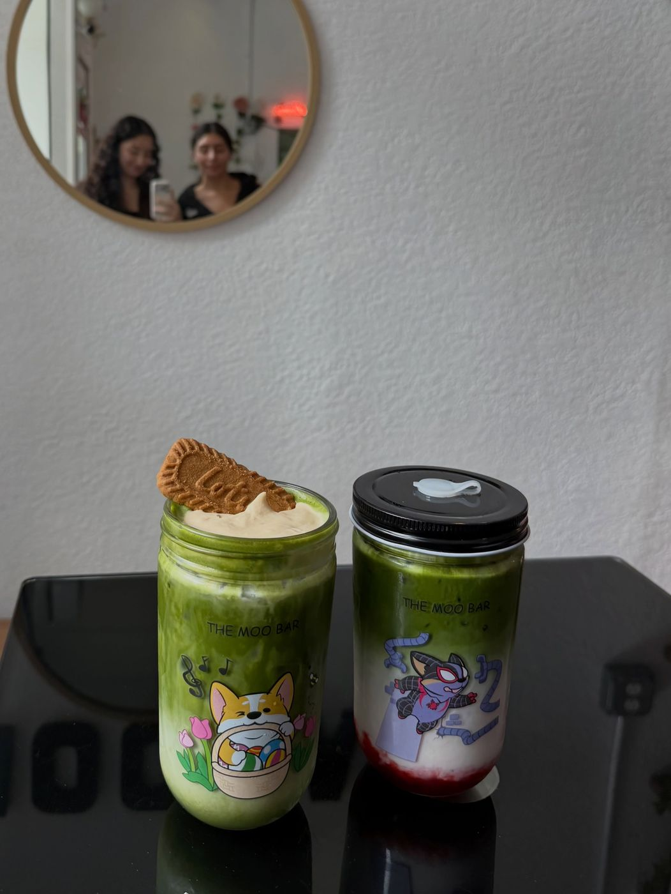

The Moo Bar in South Lake Union
Catching up on some last Seattle cafes before I start posting Chicago ones (and Austin)! I tried this spot a while ago, towards the beginning of the summer.


I got the Biscoff iced matcha, and Lucia got the strawberry matcha.
The cups were so cute and you get to keep them. Lucia got a Spider-Man design, and I got some type of Easter design. The matcha wasn't super strong, but they were pretty good drinks.
what i got: biscoff iced matcha
see this spot on the map
see this on insta